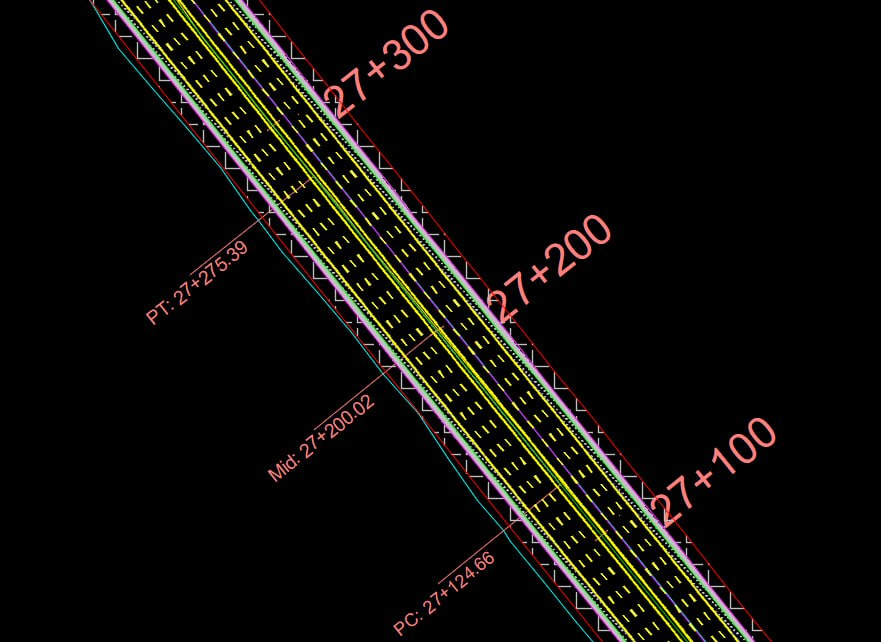

Road Infrastructure
UNISA – Gelan – Bishoftu Road Project
A road infrastructure assignment forming part of the SBS project record and connected to an important transport corridor around the Addis Ababa metropolitan area.